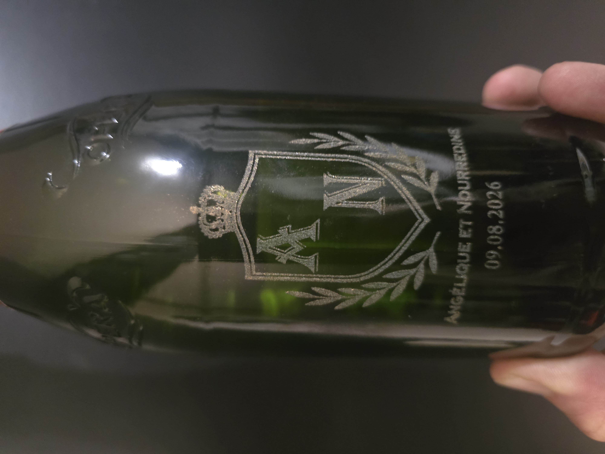
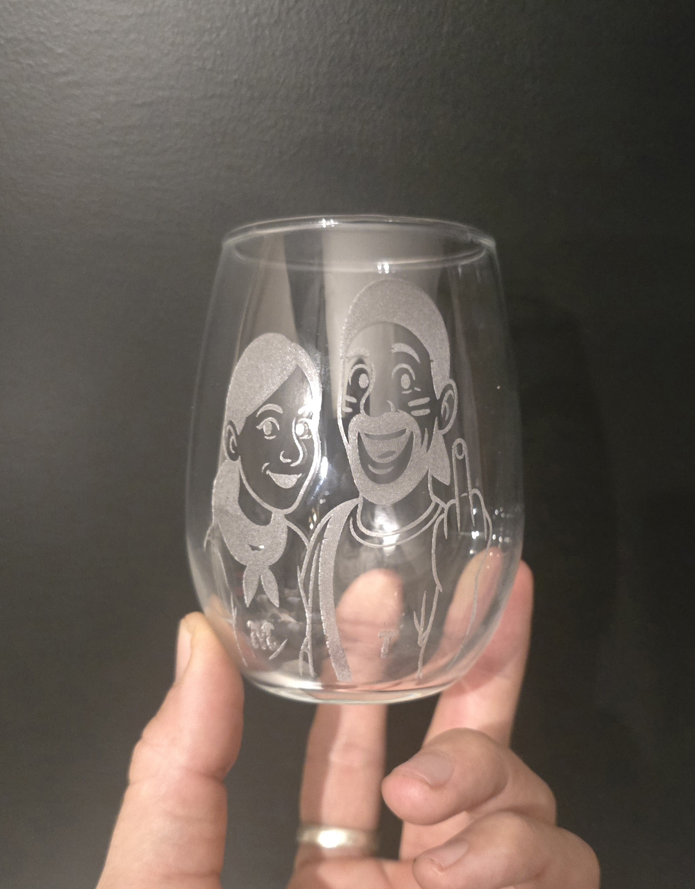

Gravure Laser sur divers supports – Laser & Matière by Toutefer
Chez Laser & Matière à La Châtaigneraie, nous réalisons la gravure laser sur Divers supports avec une précision exceptionnelle. Cette technique permet de marquer Différents supports et texture, créant ainsi des motifs élégants et durables.
Applications sur divers supports
Idéal pour les les objets personnalisés, Bouteille, tote bags, outils, plaques métal, cuir , casque et bois, la gravure laser permet une personnalisation nette, élégante et durable. Chaque matériau réagit à sa manière au faisceau, offrant des rendus uniques et parfaitement adaptés à chaque projet.
© Laser & Matière by Toutefer — Gravure laser divers supports à La Châtaigneraie (Vendée)


Découvrez aussi nos autres réalisations :
Gravure sur métal | Gravure sur cuir | Gravure sur acrylique | Gravure PS5 | Impression 3D | Gravure sur outils | Gravure sur toile